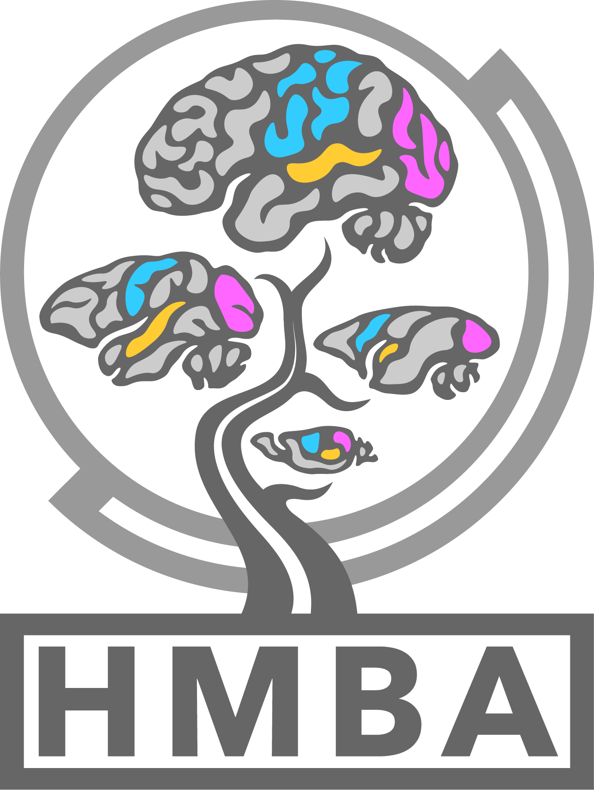

Loading documentation…

BRAIN Initiative Cell Atlas Network (BICAN)
A cross-species whole-brain single-cell RNA-seq taxonomy spanning human, macaque, and marmoset, referenced to the mouse and human whole-brain taxonomies (Yao et al., Langlieb et al, Siletti et al.).
Loading documentation…